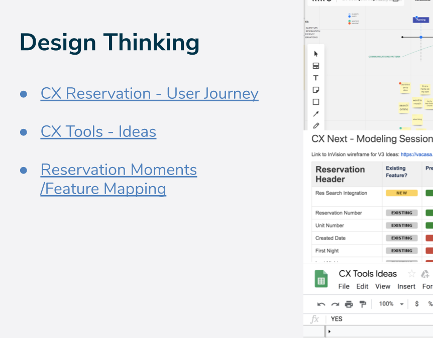

All work
Vacasa · 2020
CX Innovation Roadmap + Design Sprint
Design-thinking strategies for a next-generation customer experience — running the sprint that turned an ambiguous CX mandate into a sequenced, defensible roadmap.
Client
Vacasa
Year
2020
Role
Senior Product Designer / Sprint Facilitator
Focus
Strategy · Research · Facilitation

The brief
Improve the customer experience is the kind of mandate that produces a year of unfocused work. The job was to convert it into something a team could actually build against: a shared understanding of the current-state journey, a ranked set of opportunities, and a roadmap leadership would fund.
Design thinking, applied
- Discover. Mapped the existing reservation-management journey end to end and gathered the friction already visible in support and operations.
- Define. Reframed scattered complaints into a small number of well-formed problem statements the group could vote on.
- Ideate. Facilitated cross-functional sprint sessions — product, engineering, operations, and support in the same room — so solutions carried buy-in from the start.
- Prototype. Built concepts fast and cheap, sized for a decision rather than for polish.
- Test. Put them in front of users and let the roadmap ordering fall out of what actually tested well.
A sprint's real output isn't the prototype. It's a room full of people who now agree on which problem is worth solving first.
Outcome
The sprint produced the CX innovation roadmap that fed directly into the Reservation Management revamp — the concepts validated here became the design work that shipped.